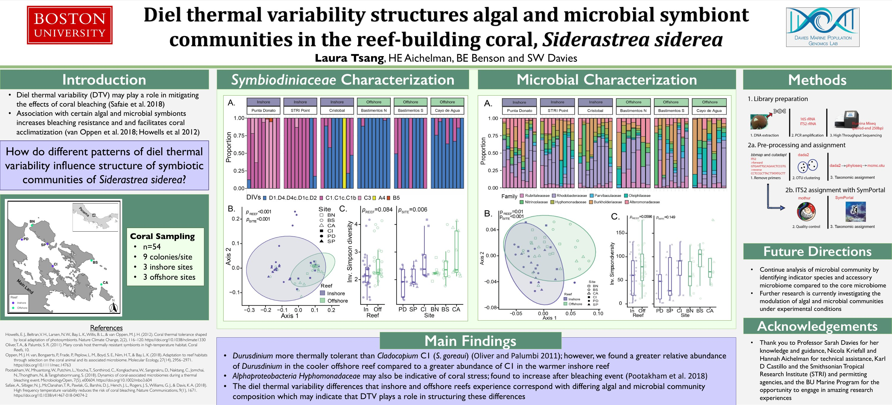

SICB 2021 research poster
A research poster on how daily temperature variability relates to algal and microbial symbiont communities in the reef-building coral Siderastrea siderea.
Open the original poster PDF ↗


A research poster on how daily temperature variability relates to algal and microbial symbiont communities in the reef-building coral Siderastrea siderea.
Open the original poster PDF ↗
